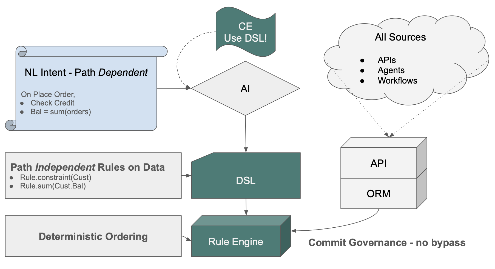

Allocation Case Study
The Missing Infrastructure for Enterprise AI Governance
AI skeptics say it produces ungoverned code. AI believers say it's transformative. They're both right. Here's the architecture — and the proof.
If you follow enterprise AI, you know the debate.
The believers: AI is transformative. It understands intent, generates systems from natural language, collapses months of development into days. The productivity leap is real and irreversible.
The skeptics: AI-generated code can't be governed. Business logic is path-dependent. Dependencies are implicit. Constraints get enforced in some paths and silently missed in others. You can't audit what you can't trace.
Both camps are right.
Remarkably, AI itself agrees. We asked GitHub Copilot to generate business logic from natural language requirements. It produced 220 lines of procedural code — with critical bugs. When prompted about edge cases, it found the bugs itself. Then, unprompted, it wrote an analysis explaining why procedural code for business logic structurally cannot be correct. Claude subsequently sharpened that analysis, and two AI systems — independently — arrived at the same conclusion:
"AI alone generates broken code. AI + Declarative Rules generates working systems."
That's not our claim. That's AI's diagnosis of its own output.
This is the story of what "AI + Declarative Rules" looks like in practice — told through a real system, with real code, and a result that makes the debate obsolete.
Why the Skeptics Are Precisely Right
The problem isn't code quality. It's structural.
AI generates code by pattern matching — inferring what comes next from structure it has seen. For most programming tasks, this works well. But enterprise business logic has a specific property that pattern matching cannot handle: transitive dependency chains.
The Copilot experiment makes this concrete. Five simple business rules:
- Copy unit_price from Product to Item
- Item amount = quantity × unit_price
- Order total = sum of Item amounts
- Customer balance = sum of unshipped Order totals
- Customer balance ≤ credit_limit
Copilot generated 220 lines of procedural code. When we asked "what if the order's customer_id changes?" — critical bug found. "What if the item's product_id changes?" — another critical bug.
Both bugs follow the same pattern: FK changes require updating both old and new parents. Procedural code handles one direction and silently misses the other. The system doesn't crash. Tests pass. The numbers are quietly wrong until an audit finds them.
Copilot's analysis (documented here) concluded: "Dependency graphs have exponential combinations of change paths. AI generates code sequentially but cannot enumerate all change paths, cannot prove completeness, and cannot handle transitive dependencies reliably. Even asking 'what if X changes?' only finds bugs for that specific X."
This isn't a capability gap that better models will close. It's a paradigm mismatch. The skeptics are precisely right — and "be more careful with prompts" doesn't solve it. The architecture is the problem.
A Three-Chapter Story
Chapter 1: Procedural Code — Four Years, Never Shipped
A US state agency needed to allocate charges across departments and GL accounts.
The logic is straightforward to describe: when a charge arrives against a project, cascade it through two levels — split across departments by funding percentages, then split each department's share across GL accounts by charge definition percentages. Both levels must total exactly 100%. A charge may only post if the project's funding definition is active. All totals must roll up correctly.
Two developers spent four years trying to build this in procedural code.
They never shipped it.
Not because they were slow. Because enforcing these rules correctly across every code path — every API, every integration, every edge case — while maintaining consistency as requirements evolved, is intractable in procedural code at scale. The dependency chains are real. Missing one breaks the books, silently.
Four years. Two developers. No working system.
Chapter 2: Declarative Rules — One Weekend
Here's what changed everything — and note carefully: this happened before AI.
A developer with expertise in declarative rules rebuilt the same system over a weekend.
Instead of writing how to enforce each constraint across every code path, you declare what must be true — and the engine handles the rest:
# 100% validation — maintained automatically, on every path
Rule.sum(derive=models.DeptChargeDefinition.total_percent,
as_sum_of=models.DeptChargeDefinitionLine.percent)
Rule.formula(derive=models.DeptChargeDefinition.is_active,
as_expression=lambda row: 1 if row.total_percent == 100 else 0)
# Roll-ups — automatically correct across all sources, all paths
Rule.sum(derive=models.Project.total_charges, as_sum_of=models.Charge.amount)
Rule.sum(derive=models.GlAccount.total_allocated,
as_sum_of=models.ChargeGlAllocation.amount)
# Two-level cascade — declared once, fires on every charge insert, every path
Allocate(provider=models.Charge,
recipients=funding_lines_for_charge,
creating_allocation=models.ChargeDeptAllocation,
while_calling_allocator=allocate_charge_to_dept)
Allocate(provider=models.ChargeDeptAllocation,
recipients=charge_def_lines_for_dept_allocation,
creating_allocation=models.ChargeGlAllocation,
while_calling_allocator=allocate_dept_to_gl)
These rules fire at commit time — for every path, automatically, without exception. The engine builds the complete dependency graph at startup, listens to every attribute change, fires only affected rules in dependency order, and handles old and new parents automatically on FK changes. There is no path that can bypass it. There is no change it can miss.
Think of a spreadsheet. You don't write code to handle "what if cell B5 changes." You declare B10 = SUM(B1:B9) and the spreadsheet handles dependencies automatically. Same principle, applied to multi-table business logic, at commit time.
44x less code. What defeated two developers over four years — what Copilot confirmed cannot be made correct in procedural form — becomes a handful of declared invariants. All correct. All auditable. All automatically enforced.
The system that never shipped in four years: done in a weekend.
Rules are the governance infrastructure that enterprise AI is missing. The barrier was always the learning curve — thinking declaratively is a different paradigm, and most teams default to procedural code.
Chapter 3: AI + Rules + CE — Five Minutes From a Business Prompt
Now AI enters. And this is where the believers are completely right.
Here is what it takes to build the same allocation system with GenAI-Logic today:
Departments own a series of General Ledger Accounts. Departments also own Department Charge Definitions — each defines what percent of an allocated cost flows to each of the Department's GL Accounts. An active Department Charge Definition must cover exactly 100% (derived: total_percent = sum of lines; is_active = 1 when total_percent == 100).
Project Funding Definitions define which Departments fund a designated percent of a Project's costs, and which Department Charge Definition each Department applies. An active Project Funding Definition must cover exactly 100%.
When a Charge is received against a Project, cascade-allocate it in two levels: Level 1 — allocate the Charge amount to each Department per their Project Funding Line percent Level 2 — allocate each department amount to that Department's GL Accounts per their Charge Definition line percents
Constraint: a Charge may only be posted if the Project's Project Funding Definition is active.
Charges can be placed by contractors who may supply only a minimal project description — use AI Rules to find an Active Project based on a fuzzy match to project name and past charges from the contractor.
A business prompt. No rules syntax. No declarative training. Written the way a business analyst writes a specification.
Five minutes. Working system — database, API, admin UI, two-level cascade, 100% validation, automated roll-ups, AI fuzzy project matching, full audit trail — governed from the first commit.
The progression:
- Procedural code: four years, two developers, never shipped
- Declarative rules: one weekend, requires deep expertise
- AI + Rules + CE: five minutes, business prompt, no rules training required, Enterprise-class architecture and governance
The same business prompt to a native AI tool produces FrankenCode — procedural code with path-dependent enforcement, implicit dependencies, no audit trail. The demo works. The governance doesn't.
The difference is Context Engineering: a 9,000-line architectural knowledge layer in the repository that teaches AI the rules DSL. The DSL is the bridge: a structured, human-readable declaration of business intent — what must be true, not how to enforce it — that preserves business meaning while remaining directly executable by the Rule Engine. Without CE, AI pattern-matches to procedural code. With CE, AI translates business intent into declared invariants on data. Procedural intent in. Commit-enforced, path-independent governance out.
The Missing Infrastructure
The governance gap in enterprise AI isn't waiting for better models. Copilot told us so itself. It's an infrastructure problem — and infrastructure problems have infrastructure solutions.
The architecture looks like this:

Three elements, each requiring the others:
The Rule Engine — the heart of the system, hooked into the ORM commit event, inside the transaction. Every path — APIs, agents, UIs, batch processes, future integrations not yet designed — converges on one control point. The engine builds the complete dependency graph at startup and enforces it deterministically at every commit. Nothing bypasses it by architecture, not discipline. The audit trail is structural: requirement → rule → execution log, provable not asserted.
Generative AI — translating business intent into governed rules. Five minutes from a business prompt. AI continues as development partner throughout: generating test suites from the rules, supporting incremental changes, explaining any rule or transaction in plain language.
Context Engineering — ensuring AI generates rules, not FrankenCode. CE directs AI to use the rules DSL rather than procedural code, transforming path-dependent intent into path-independent invariants. Without it, same AI, same prompt, same procedural failure Copilot demonstrated.
Remove any one: the system degrades. The Rule Engine without AI requires deep declarative expertise — the weekend, not five minutes. AI without the Rule Engine produces FrankenCode. Both without CE means AI generates procedural code even when rules are the intent.
You can't govern paths. You can govern the commit.
What This Means Now
Every enterprise deploying AI at scale is discovering the same gap. Agents that bypass business constraints. Calculations that drift. Audit trails that don't exist. Boards asking questions nobody can answer cleanly.
The infrastructure to solve it exists today — open source, and the allocation system ships as the default demo when you install GenAI-Logic. You can run it yourself in minutes. The system that two developers spent four years on and never shipped is now a five-minute business prompt. Governed from the first commit. Auditable by design. Correct on every path, including paths that don't exist yet.
AI alone generates broken code. AI + Declarative Rules generates working systems.
Two AI systems said it. The architecture proves it.
Install GenAI-Logic — the allocation system runs as the default demo: apilogicserver.github.io/Docs/Install-Express. The reference implementation: github.com/ApiLogicServer/charge-allocation-reference. The Copilot/Claude self-diagnosis: declarative-vs-procedural-comparison.md. Learn more at genai-logic.com.